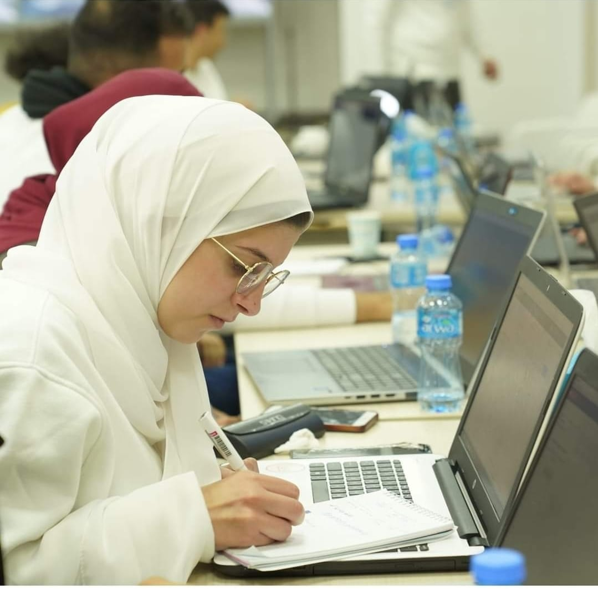

Tala Hithnawi, 24 years old, Palestinian from Jenin,computer engineering graduate from AnNajah National University . My practical qualifications varies in different fields from leading a feminine team which is “Youths towards change” to participating in so many activities that belong to many associations in my university, activities from astronomy camping with SAPA to programming nights with Paltel & IEEE or GDG. My English is good to very good depending on the required skill. I want to mention several ualities I see in me, that I can really work under pressure & difficult situations,second, I can easily work with a group, also I make social relations quickly, going to my field I know how to code in many different computer languages such as pithon, Java..also I am a good user of Microsoft applications “Word, Excel, PowerPoint” . Thank you for listening & for your precious time.
